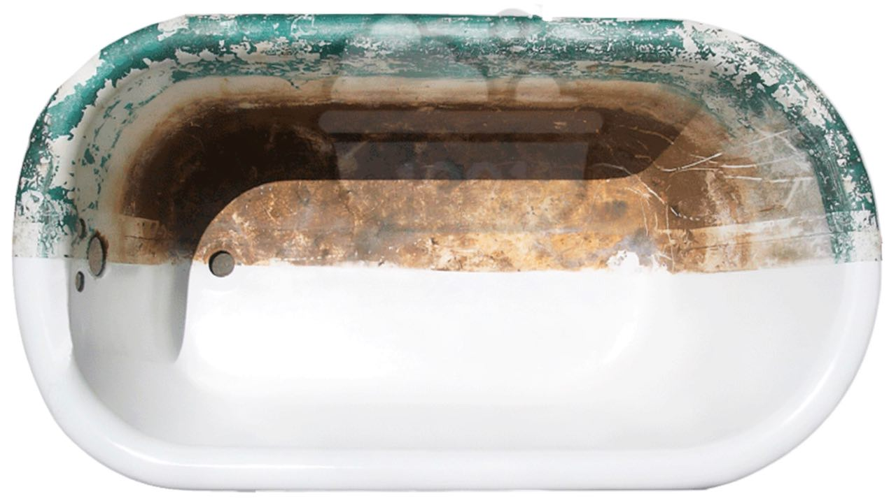
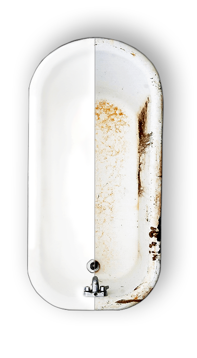
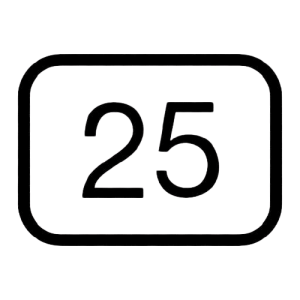
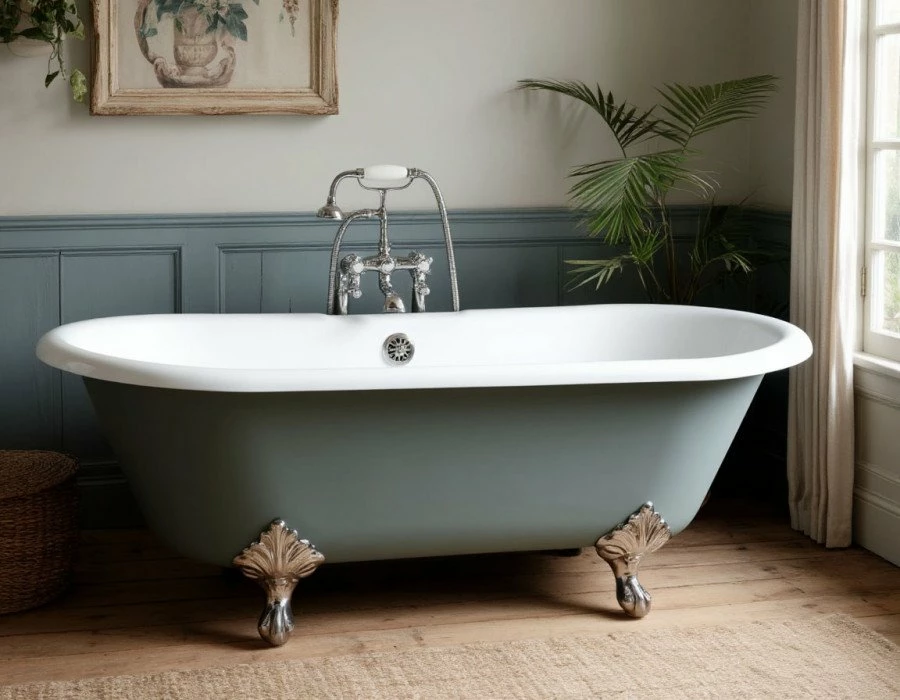

Реставрация ванны 1,2 м
от 200 BYN
*в зависимости от производителя акрила
Выполним реставрацию ванны жидким акрилом всего за 2 часа и гарантией 2 года!

Реставрация ванн — это финансово выгодное решение при дорогостоящем ремонте ванной комнаты и Вы убедитесь, что восстановление ванны гораздо дешевле её замены, а качество современных акриловых покрытий гораздо выше, чем качество эмали на современных недорогих ваннах.
В процессе реставрации ванны мы осуществляем локальный ремонт, который поможет недорого и качественно устранить различные сколы и царапины на поверхности ванны.
Основное преимущество реставрации ванны – отсутствие необходимости демонтажа, что существенно снижает затраты времени на проведение работ и не доставляет больших неудобств.
Суть реставрации ванны состоит в создании на поверхности ванны нового белоснежного глянцевого слоя, который придаст старой ванне вид только что приобретённой.
Комплексная реставрация ванн – быстрый, эффективный и экономически выгодный способ продлить жизнь старой ванне. Ведь покупка новой – удовольствие достаточно дорогое.
Речица Светлогорск Жлобин Мозырь Рогачёв

При правильном использовании срок службы покрытия достигает 25 лет.
Материал набирает свою прочность и ванной можно пользоваться.
На каждую ванну заключаем договор и даём гарантию на работы 2 года.
Все работы по реставрации ванны производится без демонтажа.
Подключение новой обвязки ванны (сифона) - БЕСПЛАТНО

от 200 BYN
*в зависимости от производителя акрила
от 220 BYN
*в зависимости от производителя акрила
от 240 BYN
*в зависимости от производителя акрила

Качественная реставрация ванн: Речица, Светлогорск, Жлобин, Мозырь, Рогачёв – основная цель нашей компании.
Мы заботимся о том, чтобы жители нашего региона чувствовали себя в своей ванной комнате уютно и комфортно.
За многие годы жизни в своих квартирах, мы отладили быт, уборку и все остальные хозяйственные процессы. Но однажды проводя в очередной раз генеральную уборку, мы понимаем, что наша ванна уже не такая белоснежная как раньше, и даже современные чистящие средства не могут привести её в первозданный вид. И возможно с этой трудностью столкнулись ваши близкие друзья, родственники или родители.
Реставрация ванн – прекрасное и не дорогое решение данной проблемы. Все трудности мы возьмем на себя. Работы по реставрации ванны не займут много времени, не потребуется ремонт самой ванной комнаты и годами созданный уют в Вашей ванной не нарушится.
Сравнение «до» и «после»
Одно из исследований доказало, что среднестатистический человек за свою жизнь проводит в ванной комнате в среднем 2 года, и врядли кто-то из нас хотел бы провести это время в каком-то не уютном месте…
Человек всегда стремится к комфорту, чистоте и эстетике, а это, как правило, дорогого стоит. С течением определенного периода времени любая ванна, из каких бы материалов она не была изготовлена, все равно теряет свой прежний вид: появляются сколы, царапины, желтый налет, а со временем слазит и эмаль. И тогда человек стоит перед выбором - что делать?! Покупать новую или попробовать реставрировать старую ванну?
Наши специалисты предлагают современный метод реставрации ванн в Речице, Светлогорске, Жлобине, Мозыре и Рогачёве. Данная услуга позволит избежать многих проблем по демонтажу старой ванны и покупки, установки и подключения новой, а так же грандиозного ремонта в последствии. В своей работе мы используем качественный материал SIPOFLEX (двухкомпонентный наливной акрил), который заручился поддержкой у многих компаний в соотношении цены и качества.
Отличительной особенностью реставрации ванн жидким акрилом является то, что акрил наносится на верхние борта ванны (без использования кисти или валика) и стекает к сливу оставляя за собой равномерную и гладкую поверхность. У Вас нет необходимости демонтировать ванну, ломать голову в вопросе, как её вынести и сколько же всё это будет стоить!
Речица · Жлобин · Светлогорск · Мозырь · Рогачёв
Решил сделать, что-нибудь с ванной, за долгие годы пожелтела и стала вся шершавая. Выбирал между эмалировкой и наливной. Не хотелось тратить много денег и остановился на эмалировке, но изучив не много методы реставрации ванн, понял, что эмалировка не надежна и решил сделать наливную. Все супер, очень хорошо моется, гладкая, не жалею, что остановился на наливной
Решил сделать, что-нибудь с ванной, за долгие годы пожелтела и стала вся шершавая. Выбирал между эмалировкой и наливной. Не хотелось тратить много денег и остановился на эмалировке, но изучив не много методы реставрации ванн, понял, что эмалировка не надежна и решил сделать наливную. Все супер, очень хорошо моется, гладкая, не жалею, что остановился на наливной
Заказывали реставрацию ванны и результат превзошел наши ожидания. Очень довольны отношением мастера к работе, все чисто, аккуратно и достаточно быстро. Думали, что все это займет пару дней, а сделали все где-то за часа за 3. Ванна была ужасная, квартира досталась от родителей и ванне было уже больше 30 лет. Сейчас у нас новая ванна
Пол года назад отреставрировали ванну акрилом. Этих ребят посоветовала соседка. Сделали все очень хорошо и быстро, за пару часов ванна стала совершенно другая. Не знала даже, что у нас в Речице есть такая услуга, хотели с мужем покупать новую ванну, а тут соседка подсказала, что можно восстановить старую. Результатом очень довольны, пол года ванна, как новенькая, посмотрим, как будет дальше. Спасибо большое Евгению за новую ванну
На самом деле реставрация ванны может быть выполнена самостоятельно, на первый взгляд ничего сложного в этом нет. Тем более, что сегодня в интернете очень много советов и инструкций, как это сделать.
Но мы хотели бы обратить Ваше внимание на то, что в теории многие вещи являются совсем не таковы, как на практике. Если подробно изучить метод реставрации ванны жидким акрилом и взять во внимание специфику работы и поведение материала, нужно сразу сказать, что просто попробовать у Вас не получится и любая Ваша ошибка, скорее всего обернётся необходимостью замены ванны на новую.
Прежде, чем приступить к самостоятельной реставрации ванны, подумайте, стоит ли оно того? Может быть лучше доверить это дело специалисту?
Мы имеем огромный опыт в реставрации ванн и за нашими плечами уже сотни восстановленных ванн и довольных клиентов!
Технологии и материалы с течением времени все больше и больше совершенствуются и сегодня со сто процентной уверенностью можно сказать, что реставрация ванн жидким акрилом наилучший вариант восстановления старой ванны. За последнее время метод реставрации ванн жидким акрилом избавился от основных недостатков таких, как неприятный запах и повышеная хрупкость материала, что нельзя сказать про акриловый вкладыш и эмалировку ванны. Недостатков у данных методов придостаточно:
Метод реставрации ванн жидким акрилом, по-другому «Наливная ванна», является золотой серединой по соотношению цены и качества.
Всё очень даже просто. Мыть ванну рекомендуется обычной хозяйственной губкой или тряпкой, не применяя порошковых чистящих средств, желательно использовать жидкие чистящие средства. Основным плюсом при уходе за ванной, отреставрированной жидким акрилом, является то, что поверхность ее очень гладкая и позволяет всей грязи без проблем стекать по поверхности, а мыть ее намного проще, чем чугунную или металическую
При сравнение реставрации старой ванны и покупки новой, необходимо учитывать не только стоимость новой ванны, но и финансовые затраты на работы по ее доставке, установке и демонтажу старой ванны. В реальности новая ванна кажется не дорогим решеним только в магазине. Когда Вашу новую ванну привезут к Вам домой, Вы столкнетесь с определенными трудностями, о которых не задумывались в магазине. Ниже мы постараемся привести примерные расходы на замену ванны:
Готовы ли Вы к таким расходам? Если нет, то тогда звоните нам! +375 29 127-83-49
Адрес: уточняется
Время работы: с 9:00 до 21:00, без выходных
Email: уточняется
Телефон: +375 29 127-83-49
УНП 791062180
Укажите имя и телефон — перезвоним в ближайшее время